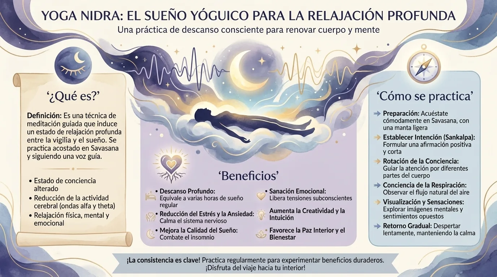

Yoga nidra: el sueño consciente que descansa más que una siesta
Dormir sin dormir: cómo es una sesión de yoga nidra, qué dice la ciencia sobre el sueño y el estrés, su relación con el NSDR y una práctica de 10 minutos.
Dormir sin dormir: la extraña promesa del yoga nidra
Túmbate.
No te muevas más.
Una voz empieza a guiar tu atención hacia:
- la mano derecha;
- el pulgar;
- el índice;
- el dedo corazón;
- la palma;
- la muñeca.
Luego el brazo.
Luego otra zona.
Tu cuerpo se vuelve pesado poco a poco.
Todavía oyes la voz.
Pero algo cambia.
No estás exactamente dormido.
Pero tampoco estás ya en tu estado de vigilia habitual.
Bienvenido al yoga nidra, un nombre que se asocia literalmente a la idea de «sueño yóguico».
Esta práctica se ha vuelto muy popular en las apps de meditación y los programas de relajación porque promete algo que a nuestra época le encanta:
descansar a fondo sin necesidad de dormir.
En internet, a veces se presenta el yoga nidra así:
«30 minutos de yoga nidra equivalen a cuatro horas de sueño».
Esta afirmación tan llamativa circula por todas partes.
Pero no hay datos sólidos que permitan establecer una equivalencia universal entre unas decenas de minutos de práctica y varias horas de sueño fisiológico.
El sueño cumple funciones biológicas específicas que una relajación guiada no sustituye minuto a minuto, así sin más.
Eso no significa que el descanso profundo sin sueño no sirva para nada.
Todo lo contrario.
Las investigaciones recientes sobre el yoga nidra empiezan a ser lo bastante interesantes como para que la práctica merezca algo mucho mejor que un eslogan exagerado.
¿Cómo es una sesión real de yoga nidra?

Hay varias escuelas, pero el protocolo moderno más influyente en Occidente suele asociarse a Swami Satyananda Saraswati, fundador de la Bihar School of Yoga.
La práctica suele seguir varias etapas.
Preparación
Te tumbas, a menudo en shavasana.
El cuerpo tiene que estar lo bastante cómodo como para no necesitar moverse a cada rato.
Sankalpa
El sankalpa es una intención o resolución breve.
Por ejemplo:
«Mantengo la calma ante las dificultades».
O bien:
«Cuido mi energía».
Se formula en pocas palabras y se repite mentalmente.
Rotación de la conciencia
Es probablemente el sello más reconocible del yoga nidra.
La atención pasa rápidamente de una zona del cuerpo a otra.
Mano.
Brazo.
Cara.
Pierna.
Espalda.
La consigna no es necesariamente moverse.
Sientes mentalmente la zona y pasas a la siguiente.
Respiración
Después, la atención puede seguir la respiración, a veces con una cuenta atrás.
Sensaciones opuestas
Algunos métodos introducen parejas como:
- pesado / ligero;
- calor / frío;
- comodidad / incomodidad.
Visualización
Se pueden proponer imágenes o escenas.
Vuelta al sankalpa
Se repite la intención inicial.
Despertar progresivo
La atención regresa al cuerpo y al entorno.
Esta estructura ya explica por qué una sesión puede resultar tan absorbente.
Durante veinte a cuarenta minutos, la mente recibe continuamente una tarea lo bastante sencilla como para no tener que pensar, pero lo bastante estructurada como para no volver a perderse del todo en las rumiaciones.
¿Por qué la rotación por el cuerpo calma tan bien el parloteo mental?
Intenta pensar a la vez en tu reunión de mañana y en la sensación de la yema de tu pulgar derecho.
Puedes hacerlo.
Pero la atención queda repartida.
Ahora añade:
- índice;
- corazón;
- anular;
- meñique;
- palma;
- muñeca.
Tu cerebro tiene que actualizar el objetivo sin parar.
La rotación de la conciencia ocupa, por tanto, el canal de la atención.
En lugar de pedir:
«Deja de pensar»,
que suele ser una consigna desastrosa,
el yoga nidra dice:
«Piensa en esto ahora. Luego en esto. Luego en esto».
La mente tiene una tarea.
Las rumiaciones tienen menos espacio.
Se parece mucho a ciertas técnicas de body scan, pero con un ritmo y una estructura muy característicos.
Al mismo tiempo, el cuerpo puede reducir su actividad muscular.
Y te encuentras en una situación poco habitual:
muy poco movimiento + atención guiada + baja exigencia cognitiva.
Es el cóctel ideal para acercarse a un estado de descanso profundo.
Yoga nidra y sueño: ¿qué muestran realmente las investigaciones?
Los datos son alentadores, pero todavía modestos.
Una revisión sistemática publicada en 2026 identificó seis ensayos aleatorizados con un total de 244 participantes, centrados sobre todo en el insomnio crónico, el insomnio agudo y distintos grupos sometidos a condiciones especiales. Varios estudios informaban de mejoras en parámetros del sueño como la latencia para dormirse, el tiempo total de sueño o la eficiencia del sueño. Pero los autores señalan una gran heterogeneidad en los protocolos y un riesgo de sesgo a menudo moderado o alto.
Otra revisión sistemática con metaanálisis publicada en abril de 2026 es aún más prudente. Los análisis de los ensayos controlados sobre la calidad del sueño y la gravedad del insomnio no dieron resultados estadísticamente significativos en algunas agrupaciones, y los autores consideran que la certeza global de la evidencia es muy baja, sobre todo por el pequeño tamaño de las muestras y la heterogeneidad.
La conclusión razonable es, por tanto:
el yoga nidra es prometedor para el sueño, pero todavía no puede presentarse como un tratamiento del insomnio sólidamente establecido, al mismo nivel que los enfoques respaldados por una literatura clínica mucho más robusta, en particular la terapia cognitivo-conductual para el insomnio.
Menos espectacular.
Mucho más útil.

¿Y para el estrés y la ansiedad?
Los datos recientes también son interesantes.
Una revisión sistemática y metaanálisis publicada en 2026 examinó los efectos del yoga nidra sobre el estrés, la ansiedad y la depresión a partir de un conjunto de estudios mucho más amplio, con más de 5000 participantes recogidos en la revisión. Los autores encuentran resultados favorables en varios análisis, aunque discuten las limitaciones metodológicas y la heterogeneidad del conjunto.
¿Por qué podría ayudar el yoga nidra?
Varios componentes pueden contribuir:
- inmovilidad cómoda;
- atención al cuerpo;
- ralentización de la actividad;
- respiración;
- reducción temporal de las exigencias externas;
- imágenes mentales;
- ritual repetitivo.
Así que es difícil decir:
«Este es EL mecanismo único del yoga nidra».
Probablemente porque no hay uno solo.
Como suele ocurrir con las prácticas contemplativas, el protocolo actúa más bien como un todo.
Yoga nidra y NSDR: ¿son lo mismo?

El término NSDR, de Non-Sleep Deep Rest (descanso profundo sin sueño), se ha vuelto muy popular en los últimos años.
Designa, en general, prácticas que permiten alcanzar un descanso profundo sin dormir.
El yoga nidra puede entrar en esta categoría.
Pero el NSDR no es una antigua tradición yóguica distinta.
Es más bien una etiqueta moderna y funcional que agrupa ciertas prácticas de relajación profunda, entre ellas el yoga nidra.
Así que todo yoga nidra es potencialmente una forma de descanso profundo sin sueño.
Pero no todo lo que se llama NSDR es necesariamente yoga nidra tradicional.
La diferencia importa, sobre todo para no reescribir la historia a golpe de hashtag.
¿Hay que permanecer despierto durante el yoga nidra?
Tradicionalmente, el objetivo suele ser mantener un cierto hilo de conciencia.
Pero si te duermes, ninguna policía del yoga va a venir a llamar a tu puerta.
Si lo único que buscas es dormir, quedarte dormido durante la sesión puede ser incluso perfectamente aceptable.
En cambio, si quieres explorar el yoga nidra como práctica de conciencia, intenta mantener una pequeña parte de la atención en la voz.
Algunos trucos:
- practica más temprano durante el día;
- usa una manta ligera, que no dé demasiado calor;
- dobla ligeramente un brazo para no hundirte en el sueño enseguida;
- practica sobre una esterilla en lugar de en la cama.
La idea no es luchar contra el sueño.
Solo quedarte en su frontera.
Ese estado cercano a la hipnagogia, en el que las imágenes y las sensaciones empiezan a cambiar mientras la conciencia sigue presente, puede convertirse en uno de los aspectos más interesantes de la práctica.
Una sesión exprés de diez minutos
Túmbate.
Minuto 1: preparación.
Siente el peso del cuerpo.
Elige una intención muy breve.
Minutos 2–4: rotación por el cuerpo.
Mano derecha.
Brazo.
Hombro.
Mano izquierda.
Brazo izquierdo.
Cara.
Pecho.
Vientre.
Pelvis.
Pierna derecha.
Pierna izquierda.
Minutos 5–6: respiración.
Cuenta diez exhalaciones hacia atrás.
- 10.
- 9.
- 8.
Si pierdes la cuenta, simplemente vuelve al 10.
Minutos 7–8: sensaciones opuestas.
Imagina el cuerpo pesado.
Luego ligero.
Cálido.
Luego fresco.
Minuto 9: silencio.
No hagas nada.
Solo escucha.
Minuto 10: regreso.
Repite tu sankalpa.
Siente las manos.
Los pies.
El entorno.
Y termina con calma.
Diez minutos no sustituyen una noche, por supuesto.
Pero diez minutos sin contestar a nadie, sin hacer scroll y sin resolver ningún problema ya son un lujo neurológico bastante serio.
¿Yoga nidra o siesta: cuál elegir?
Una siesta implica sueño real si te duermes.
El yoga nidra puede hacerse totalmente despierto.
Así que no son equivalentes.
Elige más bien según lo que necesites.
¿Has dormido cinco horas y estás agotado?
Probablemente tu cuerpo necesita más dormir que una filosofía del descanso.
¿Tienes la cabeza saturada pero no quieres dormir?
Un yoga nidra puede ser ideal.
¿Tienes media hora libre y temes despertarte atontado después de una siesta?
Un descanso guiado puede ser una alternativa interesante.
La mejor herramienta depende del problema.
Y, a diferencia de los eslóganes del bienestar, a la fisiología le encantan los matices.
Preguntas frecuentes
¿El yoga nidra equivale a varias horas de sueño?
No hay pruebas sólidas que permitan establecer una equivalencia fija del tipo «30 minutos = 4 horas de sueño». El yoga nidra puede favorecer un descanso profundo, pero no sustituye las funciones biológicas del sueño.
¿Puede el yoga nidra mejorar el insomnio?
Las investigaciones son prometedoras, pero todavía limitadas. Algunas revisiones recientes recogen mejoras en ciertos estudios, mientras que un metaanálisis de 2026 considera muy baja la certeza global de la evidencia.
¿Pasa algo si me duermo durante una sesión?
No. Si lo que buscas es relajarte o conciliar el sueño, puede ser incluso deseable. Si quieres hacer un trabajo de conciencia más específico, prueba simplemente a practicar a una hora en la que estés menos cansado.
¿Qué diferencia hay entre el yoga nidra y el NSDR?
El yoga nidra es una práctica estructurada que procede del yoga moderno y de tradiciones contemplativas de la India. NSDR es una denominación contemporánea más amplia que agrupa distintos métodos de descanso profundo sin dormir.
¿Prefieres practicar antes que leer?
Todo lo que describe este artículo se practica en MeditaDream, una app de meditación gratis: 146 meditaciones guiadas en español — dormir, respiración guiada, mundos inmersivos — sin suscripción, sin anuncios, sin cuenta y sin conexión.
✦ Descubre la app gratis